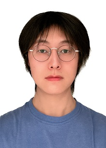

|

Work Experience
Academic Degrees
Teaching
Publications
Research Interests
Professional Activities
|
|
Dr. Cheng-Hao Cai 蔡程灏
Research Fellow (Level-B) / Adjunct Lecturer @ Monash University
Email: cheng-hao.caimonash.edu
- 2023 - Present Research Fellow (Level-B) Monash Research Institute of Science and Technology, Monash University, China
- 2023 - Present Adjunct Lecturer Department of Data Science and Artificial Intelligence, Monash University, Australia
- 2020 - 2022 Research Assistant Professor School of Computing, National University of Singapore, Singapore
- 2017 - 2020 Doctor of Philosophy (in Computer Science) The University of Auckland, New Zealand
- 2016 - 2017 Master of Science (in Artificial Intelligence) The University of Edinburgh, United Kingdom
- My current research is the automation of game development. It enables computers to automatically design computer games, so that different people can create their own games even if they don't know how to write programs. There are several questions to be explored. For example, how to enable computers to understand human's ideas by sound, text and video? How computers design the motions of NPC and the changes of scene? How computers develop reasonable stories and strategies? How computers arrange these elements into a game program...
- Automatic Refactoring of Conditions and Substitutions for B State Transition Models. (Link)
Software: Practice and Experience. 53(11): 2241-2270 (2023). Wiley. Cheng-Hao Cai, Jing Sun and Gillian Dobbie.
- Repairing Numerical Equations in Analogically Blended Theories Using Reformation. (Link)
The 3rd International Workshop on Human-Like Computing. 18-23 (2022). CEUR-WS. Cheng-Hao Cai and Alan Bundy.
- Fast Automated Abstract Machine Repair Using Simultaneous Modifications and Refactoring. (Link)
Formal Aspects of Computing. 34(2): 1-31 (2022). ACM. Cheng-Hao Cai, Jing Sun, Gillian Dobbie, Zhé Hóu, Hadrien Bride, Jin Song Dong and Scott Uk-Jin Lee.
- B Model Quality Assessments on Automated Reachability Repair with ISO/IEC 25010 . (Link)
Science of Computer Programming. 214: 102732 (2022). Elsevier. Cheng-Hao Cai, Jing Sun and Gillian Dobbie.
- Measuring the Quality of B Abstract Machines with ISO/IEC 25010. (Link)
International Symposium on Theoretical Aspects of Software Engineering (TASE). 169-176 (2020). IEEE. Cheng-Hao Cai, Jing Sun and Gillian Dobbie.
- Achieving Abstract Machine Reachability with Learning-Based Model Fulfilment. (Link)
26th Asia-Pacific Software Engineering Conference (APSEC). 260-267 (2019). IEEE. Cheng-Hao Cai, Jing Sun, Gillian Dobbie and Scott Uk-Jin Lee.
- Design Model Repair with Formal Verification. (Link)
International Conference on Formal Engineering Methods. 489-492 (2019). Springer. Cheng-Hao Cai, Jing Sun and Gillian Dobbie.
- Automatic B-model Repair Using Model Checking and Machine Learning. (Link)
Automated Software Engineering 26(3): 653-704 (2019). Springer. Cheng-Hao Cai, Jing Sun and Gillian Dobbie.
- Trainable Back-Propagated Functional Transfer Matrices. (Link)
Applied Intelligence 49(2): 376-395 (2019). Springer. Cheng-Hao Cai, Yanyan Xu, Dengfeng Ke, Kaile Su and Jing Sun.
- B-Repair: Repairing B-Models Using Machine Learning. (Link) The 23rd International Conference on Engineering of Complex Computer Systems (ICECCS). 31-40 (2018). IEEE. Cheng-Hao Cai, Jing Sun and Gillian Dobbie.
- Learning of Human-Like Algebraic Reasoning Using Deep Feedforward Neural Networks. (Link)
Biologically Inspired Cognitive Architectures. 25: 43-50 (2018). Elsevier. Cheng-Hao Cai, Yanyan Xu, Dengfeng Ke and Kaile Su.
- Symbolic Manipulation Based on Deep Neural Networks and its Application to Axiom Discovery. (Link) International Joint Conference on Neural Networks (IJCNN). 2136-2143 (2017). IEEE. Cheng-Hao Cai, Dengfeng Ke, Yanyan Xu and Kaile Su.
- A Combination of Multi-state Activation Functions, Mean-normalisation and Singular Value Decomposition for learning Deep Neural Networks. International Joint Conference on Neural Networks (IJCNN). 1-8 (2015). IEEE. Cheng-Hao Cai, Dengfeng Ke, Yanyan Xu and Kaile Su. (Link)
- Fast Learning of Deep Neural Networks via Singular Value Decomposition. (Link)
The 13th Pacific Rim International Conference on Artificial Intelligence (PRICAI): 820-826 (2014). Cheng-Hao Cai, Dengfeng Ke, Yanyan Xu and Kaile Su.
- A Novel Image Expression-Driven Modeling Strategy for Coke Quality Prediction in the Smart Cokemaking Process. (Link)
Energy. 294: 130866 (2024). Elsevier. Yuhang Qiu, Yunze Hui, Pengxiang Zhao, Cheng-Hao Cai, Baiqian Dai, Jinxiao Dou, Sankar Bhattacharya and Jianglong Yu
- A Lattice-Transformer-Graph Deep Learning Model for Chinese Named Entity Recognition. (Link)
Journal of Intelligent Systems. 32(1) (2023). De Gruyter. Min Lin, Yanyan Xu, Cheng-Hao Cai, Dengfeng Ke and Kaile Su.
- SINGA-Easy: An Easy-to-Use Framework for MultiModal Analysis. (Link) The 29th ACM International Conference on Multimedia. 1293-1302 (2021). ACM. Naili Xing, Sai Ho Yeung, Cheng-Hao Cai, Teck Khim Ng, Wei Wang, Kaiyuan Yang, Nan Yang, Meihui Zhang, Gang Chen and Beng Chin Ooi.
- Silas: A High-Performance Machine Learning Foundation for Logical Reasoning and Verification. (Link)
Expert Systems with Applications. 176: 114806 (2021). Elsevier. Hadrien Bride, Cheng-Hao Cai, Jie Dong, Jin Song Dong, Zhé Hóu, Seyedali Mirjalili and Jing Sun (sorted in surname alphabetical order).
- N-PAT: A Nested Model-Checker: (System Description). (Link)
10th International Joint Conference of Automated Reasoning (IJCAR). Part II 10: 369-377 (2023). Springer. Hadrien Bride, Cheng-Hao Cai, Jin Song Dong, Rajeev Gore, Zhé Hóu, Brendan Mahony and Jim McCarthy.
2020 - 2022 Mentor of Research Interns @ NUS (National University of Singapore) Suzhou AI Centre
2020 - 2022 Examiner of PhD Thesis and Master/Undergraduate Dissertations @ NUS
2022 PC Member of 1st International Conference on Linking Software Engineering, Artificial Intelligence and Security, Singapore
2019 - 2020 Microsoft Asia Cloud Research Software Fellow (CRSF)
2020 Visiting Researcher, Griffith University
2019 Volunteer of 18th International Semantic Web Conference, Auckland
2013 - 2014 Intern @ Institute of Automation, Chinese Academy of Sciences
The Automation of B Model Repair. International Conference on Linking Software Engineering, Artificial Intelligence and Security, 2022.
Design Model Repair with Formal Verification. Technical Seminar, the University of Queensland, 2020.
Building Machine Learning Systems on Microsoft Azure Cloud Virtual Machines. Invited by Microsoft in eResearch NZ 2020.
Microsoft Azure Cloud Services for Machine Learning-based Model Repair. 24th International Conference on Engineering of Complex Computer Systems, 2019.
- 2023 - 2024 Lecturer of FIT5032 - Internet Applications Development
- 2023 - 2024 Lecturer of FIT5046 - Mobile and Distributed Computing Systems
- 2023 - 2024 Lecturer of FIT5171 - System Validation and Verification, Quality and Standards
- 2020 TA of COMPSCI/SOFTENG 351 - Fundamentals of Database Systems
- 2019 TA of SOFTENG 752 - Formal Specification and Design
- 2023 - Present Yibo Wang (co-supervised with Dr. Peibo Duan) @ Monash University
- 2023 - Present Kai Sun (co-supervised with Dr. Peibo Duan) @ Monash University
- 2023 - Present Zixiao Zhao (co-supervised with Associate Professor Jing Sun) @ The University of Auckland
If you are interested in formal methods and have strong background on algorithms and discrete mathematics, you could send me an enquiry.
Contact
Dr. Cheng-Hao Cai
RM 817, Monash Research Institute of Science and Technology, Monash University
No. 1 Huayun Road, Suzhou Industrial Park, Suzhou, China. 215000.
Email: cheng-hao.caimonash.edu
|